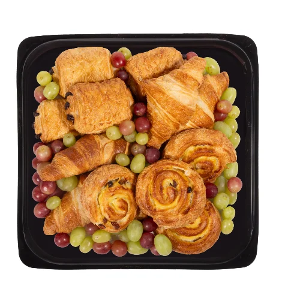

Déjeuners
Viennoiseries, muffins, beignes et autres idées pour commencer la journée.
Au service des familles d’Aylmer depuis 1959
Pour recevoir en toute simplicité
Des plateaux pour les rencontres, les fêtes et les repas en groupe. Parcourez les catégories, puis indiquez vos choix et quantités dans une seule demande.

Toujours frais et préparé avec soin
Pour une rencontre, une fête ou un repas en groupe, explorez les choix proposés par le marché.
Une offre à votre goût
Un menu clair, sans longue suite de photos à faire défiler.

Viennoiseries, muffins, beignes et autres idées pour commencer la journée.

Petites bouchées et assortiments à partager.

Plateaux et formats variés pour les lunchs et rencontres.

Salades repas, accompagnements et assortiments.

Des plateaux pour composer une table de dégustation.

Une touche sucrée ou fraîche pour compléter le repas.
Pour une réunion de travail ou une fête familiale, combinez sandwichs, salades, fromages et charcuteries. Indiquez le nombre d’invités et si les plateaux servent de repas ou d’accompagnement; l’équipe doit confirmer les portions et le prix, sans forfait présumé.
Voir les portions indicatives des plateaux de fruits et légumes
Les choix, prix et disponibilités peuvent changer. Consultez le menu officiel ou appelez le (819) 684-4156 pour confirmer.

Notez les articles et les quantités souhaités.

La demande en ligne est un prototype; appelez le marché pour une commande réelle.
Prototype uniquement : la demande en ligne ne transmet ni n’enregistre aucune information. Pour une vraie commande, communiquez directement avec le marché.